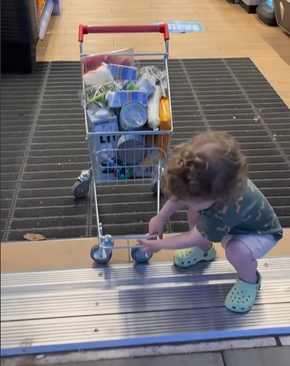
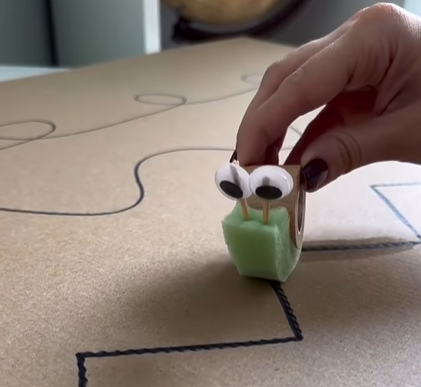
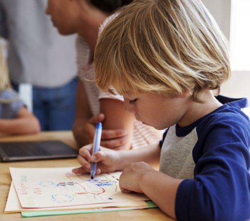

BrilhanteMente 🧠 Quando fornecemos ajuda desnecessária, criamos dependência, estamos dizendo as crianças que elas são incapazes.
Então por que elas sequer tentariam...? É um desafio observar uma criança lutando. Mas isso é resolução de problemas em ação. Eles não aprenderão se fizermos coisas por eles. Sem a oportunidade de praticar e cometer erros, a sua coordenação não pode desenvolver-se.
Quando impedimos a prática, impedimos o aprendizado, e então somos realmente um obstáculo ao seu desenvolvimento.

BrilhanteMente ✂️ Antes da criança começar a usar a tesoura para recortar, é importante que ela desenvolva algumas habilidades preparatórias. Uma dessas atividades pode ser a do caracol, onde a criança segue o traçado com uma esponja molhada.
Essa atividade prepara a criança para a habilidade do recorte com tesoura de forma eficaz. Ao praticar essa atividade, a criança aprimora sua destreza manual e coordenação, fortalecendo os músculos das mãos e dos dedos.
Assim, quando chegar a hora de usar a tesoura, a criança estará mais preparada e confiante para realizar o recorte com precisão e segurança.

BrilhanteMente 🎨 Quando uma criança te mostrar alguma arte ou desenho que tenha feito, antes de dizer "Bom trabalho!", "Que lindo, muito bem!" ou qualquer outra frase de aprovação, experimente perguntar como ela se sente em rellação àquilo que acabou de criar, e, em seguida, reafirme o que ela responder. No desenvolvimento infantil, é crucial incentivar as crianças a refletirem sobre suas criações antes de buscar aprovação externa. Essa prática promove a autoconfiança e a capacidade crítica, ajudando-as a valorizar seu próprio julgamento e a desenvolver uma independência saudável. Ao refletirem sobre suas obras, as crianças aprendem a apreciar seus esforços e a reconhecer suas habilidades, estabelecendo uma base sólida para um crescimento emocional equilibrado.